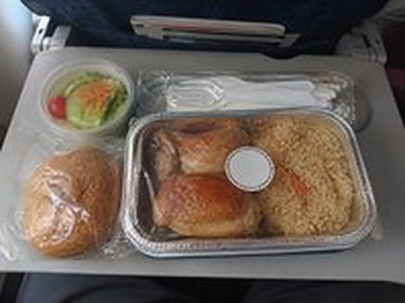
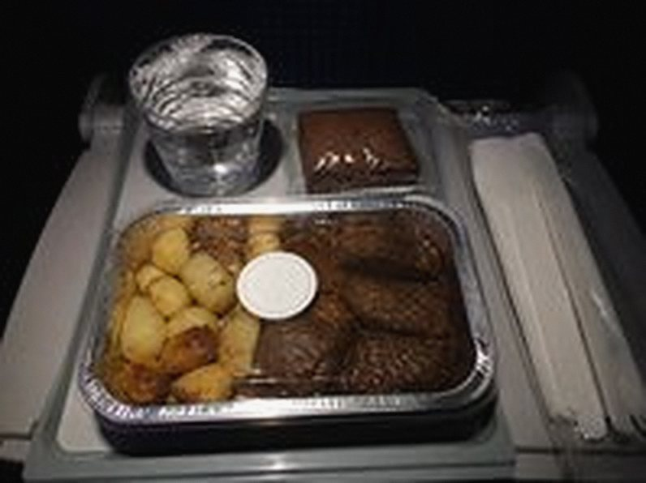
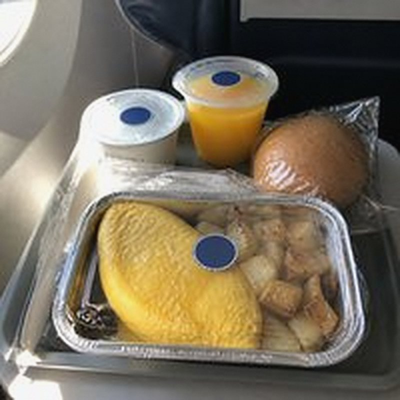
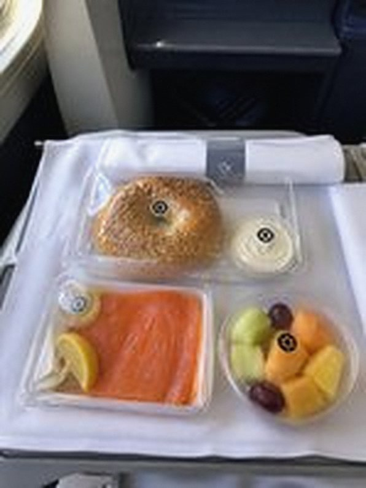

El Al LY 26OU · loaded New York · Chicken with rice, challah roll
Seal intact, served with the rest of the cabin. Crew asked before opening the lid.
Travelers report the kosher meal they were served: the airline, the city it was loaded in, the seal on the lid, and how the crew handled it.
41 reports on JFK → TLV · 3 airlines · any hechsher

Seal intact, served with the rest of the cabin. Crew asked before opening the lid.

Good brisket, arrived lukewarm. The attendant knew what a kosher meal was.
Took two asks before it came out, after everyone else. Fine once it arrived.

Every component sealed with its own sticker. Someone davening in the galley got a polite "take your time".

Return leg. Every item sealed, served first.
Hot this time. Crew offered to heat the roll separately.